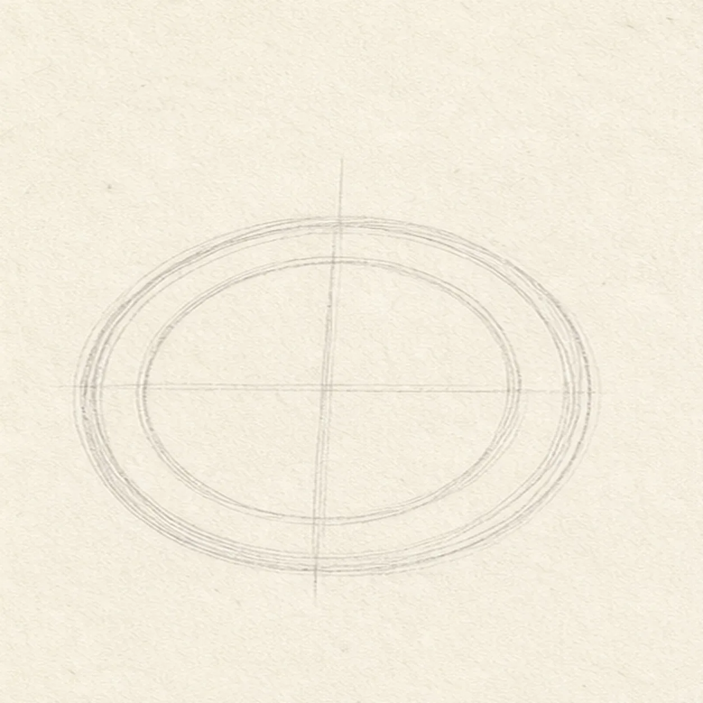
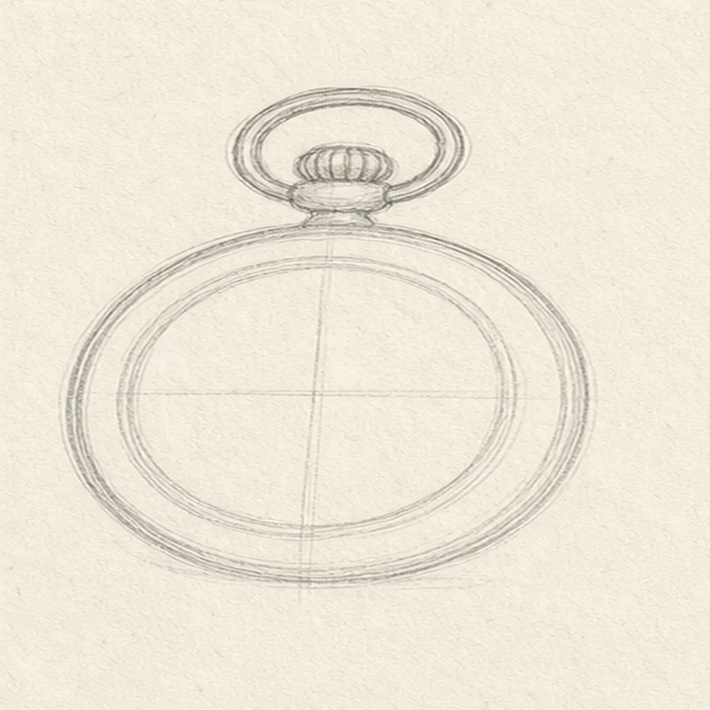
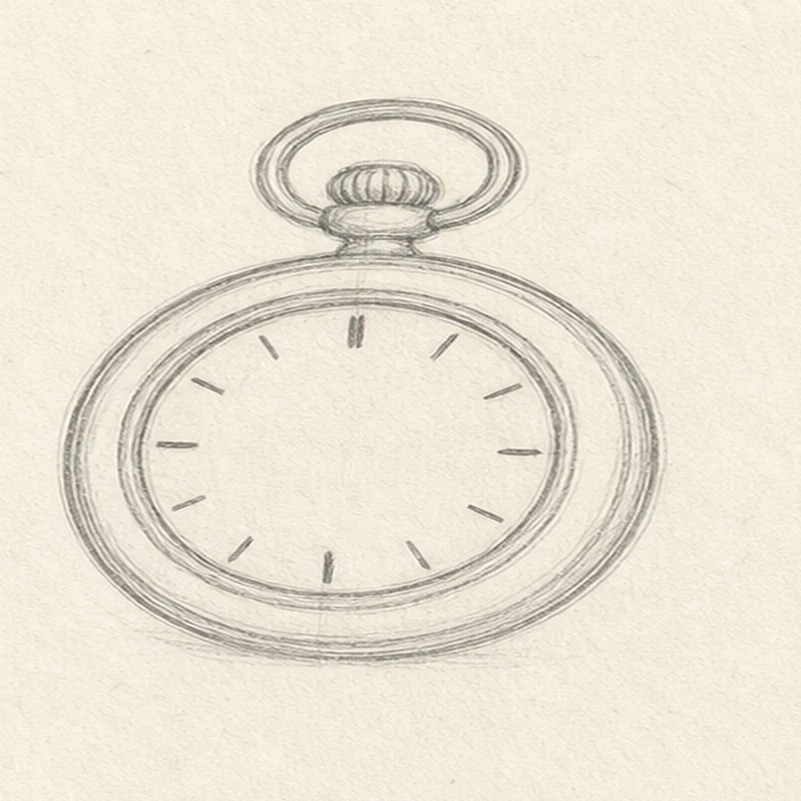
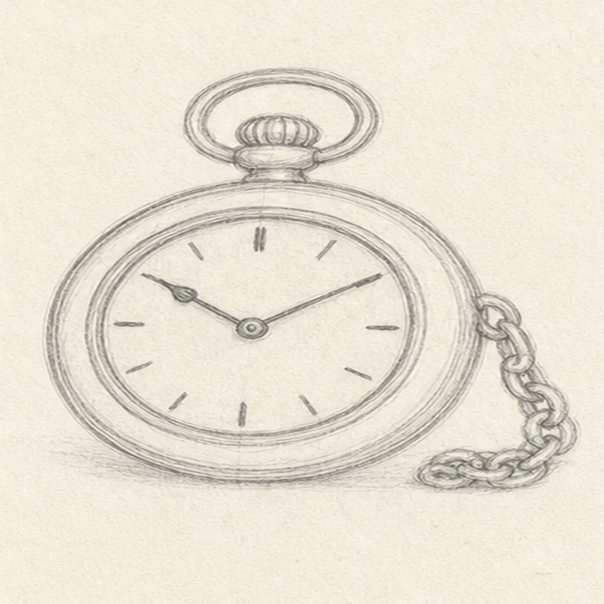
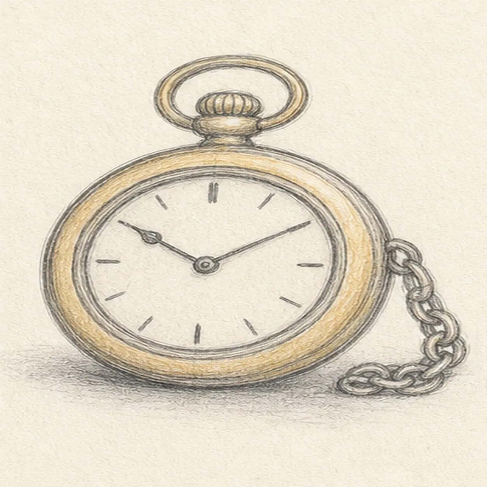

Pencil ready?
Let's draw an old-fashioned pocket watch
Treat this as one small practice round: build the subject lightly, notice the shapes, then darken only the lines that help the finished sketch.
-
01

Place the watch circles
Draw a light outer circle for the case and a smaller inner circle for the dial, then cross the dial with a faint vertical and horizontal guide.
Sketch tip: Ghost each circle several times before committing. Let the loops stay gently handmade; a few pale adjustments are more useful than pressing hard.
-
02

Add the crown
Build a small crown and rounded bow loop directly on the established top edge of the watch case.
Sketch tip: Keep the crown short and centered on the vertical guide. Compare the open space inside the bow loop before darkening its edge.
-
03

Set the dial
Add the inset dial ring and simple hour marks around the existing inner circle.
Sketch tip: Place the top, bottom, left, and right marks first, then fit the other marks between them. That keeps the dial balanced without measuring every gap.
-
04

Draw hands and chain
Place two hands inside the dial and attach a loose short chain to the right side of the case.
Sketch tip: Use a few linked ovals for the chain rather than drawing a single dark rope. Let it relax into a small curve so it feels like metal with weight.
-
05

Shade the metal
Add a pale ochre tint around the existing case and crown, then lay a soft graphite shadow under the watch and chain.
Sketch tip: Keep the color light enough for the graphite lines to remain visible. Shade along the curve of the case instead of filling it like a flat disk.
-
06

Finish the watch sketch
Strengthen the keeper contours, clarify the existing dial, hands, and chain links, and balance the established tint and shadow.
Sketch tip: Stop before adding a table scene, numbers, or extra charms. The crown, dial, and loose chain already give the watch its old-fashioned character.